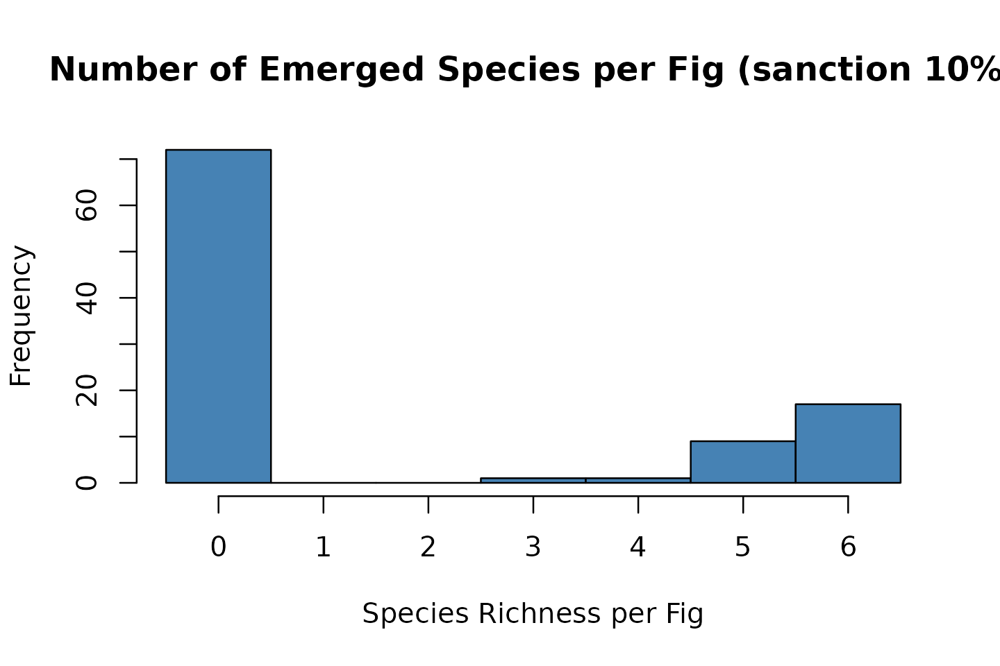
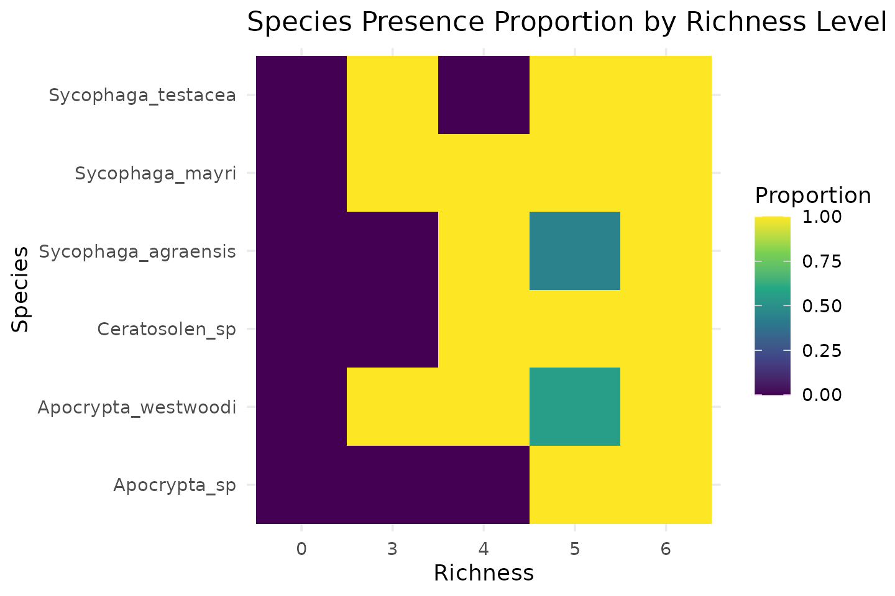

figsimR: An R Package for Simulating Fig–wasp Community Dynamics
Yiyi Dong
2026-06-17
Source:vignettes/figsimR-showcase.Rmd
figsimR-showcase.Rmd1. Introduction: When theory meets variability
Ecologists have long recognized that natural communities exhibit
large variability. figsimR operationalizes a mechanistic
null workflow: we calibrate a baseline configuration modeling (BCM) to
reproduce empirical means, then quantify the Variation Gap—the residual
dispersion that the intrinsic model cannot capture. Finally, we use
mechanism knockout experiments to dissect which internal processes
maintain the theoretical structure.
This vignette shows the full workflow on a fig–wasp case study, with
small defaults for speed. For the full reproduction (long runs), see the
package website article “Reproducing the case study” (or run this
vignette with RUN_HEAVY <- TRUE).
2. Data and quick look
We use an empirical dataset of fig wasp communities collected from Ficus racemosa. Each column is a species’ abundance; each row is one fig (community unit).
# Example data shipped with the package
data(observed_data) # 935 x 6 abundance matrix (one row per fig)
data(parameter_list_default) # Named lists of biological parameters
data(species_list) # Character vector of the six focal species
# Inspect the first rows
head(observed_data)
#> Ceratosolen_sp Sycophaga_testacea Apocrypta_sp Sycophaga_mayri
#> 1 1163 3 0 2
#> 2 1510 109 2 70
#> 3 744 102 0 39
#> 4 1494 9 0 8
#> 5 1224 10 0 42
#> 6 478 77 1 97
#> Sycophaga_agraensis Apocrypta_westwoodi
#> 1 32 189
#> 2 22 45
#> 3 62 12
#> 4 54 72
#> 5 14 103
#> 6 39 32Provenance. Aung, K. M., Chen, H.-H., Segar, S. T., Miao, B.-G., Peng, Y.-Q., & Liu, C. (2022). Journal of Animal Ecology, 91, 1303–1315. https://doi.org/10.1111/1365-2656.13701
3. Build the theoretical world (BCM)
3.1 Bootstrap empirical metrics (fast)
We summarize alpha, beta, and simple network metrics by bootstrapping figs. Defaults are small to keep this vignette snappy.
obs_metrics <- resample_observed_all_metrics(
observed_df = observed_data,
wasp_cols = species_list,
n_draws = 10,
sample_n = 50,
seed = 42,
calc_func = calc_all_metrics
)
head(obs_metrics)
#> mean_richness mean_shannon mean_simpson mean_evenness mean_bray_curtis
#> 1 4.58 0.7981529 0.4165617 0.5356446 0.6440074
#> 2 4.80 0.8352435 0.4314142 0.5451459 0.6199347
#> 3 4.60 0.7104973 0.3872805 0.4736846 0.6454684
#> 4 4.78 0.7881746 0.4040177 0.4984837 0.6524396
#> 5 5.24 0.8780027 0.4431855 0.5377353 0.6266425
#> 6 4.66 0.7462211 0.3876023 0.5170304 0.6432508
#> mean_jaccard nestedness connectance links_per_species modularity source
#> 1 0.3468435 36.17578 0.7633333 22.23144 0.08238783 Observed
#> 2 0.3114286 33.17945 0.8000000 23.06667 0.06452257 Observed
#> 3 0.3319586 37.81865 0.7823129 22.23478 0.07649338 Observed
#> 4 0.3219048 33.90781 0.7966667 22.97490 0.05664292 Observed
#> 5 0.2193333 34.82587 0.8733333 24.74809 0.04195560 Observed
#> 6 0.3497007 35.41562 0.7766667 22.51073 0.06978393 Observed3.2 Parameter ranges for BCM calibration
We convert a parameter list into ranges for Latin hypercube exploration. We remove fixed items (interaction matrix/weight).
param_ranges <- parameter_list_default
param_ranges[c("interaction_matrix", "interaction_weight")] <- NULL
param_ranges <- convert_parameter_list_to_param_ranges(param_ranges)
str(param_ranges, max.level = 1)
#> List of 60
#> $ entry_mu_Sycophaga_testacea : num [1:2] 4.2 7.8
#> $ entry_size_Sycophaga_testacea : num [1:2] 6.3 11.7
#> $ fecundity_mean_Sycophaga_testacea : num [1:2] 15.4 28.6
#> $ fecundity_dispersion_Sycophaga_testacea : num [1:2] 1.05 1.95
#> $ egg_success_prob_Sycophaga_testacea : num [1:2] 0.56 1
#> $ layer_core_raw_Sycophaga_testacea : num [1:2] 0.49 0.91
#> $ layer_mid_raw_Sycophaga_testacea : num [1:2] 0.175 0.325
#> $ layer_outer_raw_Sycophaga_testacea : num [1:2] 0.035 0.065
#> $ entry_mu_Apocrypta_sp : num [1:2] 7 13
#> $ entry_size_Apocrypta_sp : num [1:2] 5.6 10.4
#> $ fecundity_mean_Apocrypta_sp : num [1:2] 2.8 5.2
#> $ fecundity_dispersion_Apocrypta_sp : num [1:2] 1.54 2.86
#> $ egg_success_prob_Apocrypta_sp : num [1:2] 0.42 0.78
#> $ layer_core_raw_Apocrypta_sp : num [1:2] 0.035 0.065
#> $ layer_mid_raw_Apocrypta_sp : num [1:2] 0.07 0.13
#> $ layer_outer_raw_Apocrypta_sp : num [1:2] 0.595 1
#> $ parasitism_prob_Apocrypta_sp : num [1:2] 0.595 1
#> $ entry_mu_Sycophaga_mayri : num [1:2] 6.3 11.7
#> $ entry_size_Sycophaga_mayri : num [1:2] 6.3 11.7
#> $ fecundity_mean_Sycophaga_mayri : num [1:2] 14.7 27.3
#> $ fecundity_dispersion_Sycophaga_mayri : num [1:2] 1.05 1.95
#> $ egg_success_prob_Sycophaga_mayri : num [1:2] 0.42 0.78
#> $ layer_core_raw_Sycophaga_mayri : num [1:2] 0.28 0.52
#> $ layer_mid_raw_Sycophaga_mayri : num [1:2] 0.28 0.52
#> $ layer_outer_raw_Sycophaga_mayri : num [1:2] 0.014 0.026
#> $ entry_mu_Ceratosolen_sp : num [1:2] 9.1 16.9
#> $ entry_size_Ceratosolen_sp : num [1:2] 5.6 10.4
#> $ fecundity_mean_Ceratosolen_sp : num [1:2] 56 104
#> $ fecundity_dispersion_Ceratosolen_sp : num [1:2] 0.7 1.3
#> $ egg_success_prob_Ceratosolen_sp : num [1:2] 0.63 1
#> $ layer_core_raw_Ceratosolen_sp : num [1:2] 0.49 0.91
#> $ layer_mid_raw_Ceratosolen_sp : num [1:2] 0.07 0.13
#> $ layer_outer_raw_Ceratosolen_sp : num [1:2] 0.01 0.013
#> $ entry_mu_Sycophaga_agraensis : num [1:2] 4.2 7.8
#> $ entry_size_Sycophaga_agraensis : num [1:2] 4.9 9.1
#> $ fecundity_mean_Sycophaga_agraensis : num [1:2] 2.1 3.9
#> $ fecundity_dispersion_Sycophaga_agraensis : num [1:2] 1.05 1.95
#> $ egg_success_prob_Sycophaga_agraensis : num [1:2] 0.28 0.52
#> $ layer_core_raw_Sycophaga_agraensis : num [1:2] 0.01 0.013
#> $ layer_mid_raw_Sycophaga_agraensis : num [1:2] 0.35 0.65
#> $ layer_outer_raw_Sycophaga_agraensis : num [1:2] 0.343 0.637
#> $ parasitism_prob_Sycophaga_agraensis : num [1:2] 0.63 1
#> $ entry_mu_Apocrypta_westwoodi : num [1:2] 4.2 7.8
#> $ entry_size_Apocrypta_westwoodi : num [1:2] 4.9 9.1
#> $ fecundity_mean_Apocrypta_westwoodi : num [1:2] 3.5 6.5
#> $ fecundity_dispersion_Apocrypta_westwoodi : num [1:2] 0.7 1.3
#> $ egg_success_prob_Apocrypta_westwoodi : num [1:2] 0.42 0.78
#> $ layer_core_raw_Apocrypta_westwoodi : num [1:2] 0.01 0.013
#> $ layer_mid_raw_Apocrypta_westwoodi : num [1:2] 0.35 0.65
#> $ layer_outer_raw_Apocrypta_westwoodi : num [1:2] 0.343 0.637
#> $ parasitism_prob_Apocrypta_westwoodi : num [1:2] 0.42 0.78
#> $ egg_success_prob_by_phase_Apocrypta_sp_phase1 : num [1:2] 0.28 0.52
#> $ egg_success_prob_by_phase_Apocrypta_sp_phase2 : num [1:2] 0.28 0.52
#> $ egg_success_prob_by_phase_Apocrypta_westwoodi_phase2: num [1:2] 0.07 0.13
#> $ egg_success_prob_by_phase_Apocrypta_westwoodi_phase3: num [1:2] 0.49 0.91
#> $ egg_success_prob_by_phase_Sycophaga_agraensis_phase2: num [1:2] 0.07 0.13
#> $ egg_success_prob_by_phase_Sycophaga_agraensis_phase3: num [1:2] 0.56 1
#> $ egg_success_prob_by_phase_Sycophaga_mayri_phase2 : num [1:2] 0.63 1
#> $ egg_success_prob_by_phase_Ceratosolen_sp_phase2 : num [1:2] 0.56 1
#> $ egg_success_prob_by_phase_Sycophaga_testacea_phase1 : num [1:2] 0.56 13.3 Explore parameter space (short demo vs. full)
Important: LHS over thousands of samples × 1000‑fig
simulations is expensive. In the vignette we either (A) load a
precomputed result, or (B) run a tiny demo search. For full runs, set
RUN_HEAVY <- TRUE and increase n_samples,
n_draws, sample_n, and
num_figs.
# Optional: progress bars (kept OFF in vignette)
# progressr::handlers(global = TRUE); progressr::handlers("txtprogressbar")
# load a precomputed optimization (ship it in inst/extdata/)
lhs_file <- system.file("extdata", "lhs_optimize_result.rds", package = "figsimR")
if (file.exists(lhs_file)) {
lhs_opt <- readRDS(lhs_file)
} else if (RUN_HEAVY) {
lhs_opt <- explore_parameter_space_lhs(
new_param_ranges = param_ranges,
observed_summary = obs_metrics[, 1:10], # numeric summary columns
num_figs = 1000,
n_draws = 10,
sample_n = 50,
wasp_cols = species_list,
parameter_list_template = parameter_list_default,
n_samples = 5000,
top_k = 5,
n_cores = max(1, parallel::detectCores() - 1)
)
} else {
lhs_opt <- explore_parameter_space_lhs(
new_param_ranges = param_ranges,
observed_summary = obs_metrics[, 1:10],
num_figs = 200,
n_draws = 10,
sample_n = 50,
wasp_cols = species_list,
parameter_list_template = parameter_list_default,
n_samples = 50,
top_k = 1,
n_cores = 1
)
}
best_row <- lhs_opt[1, , drop = FALSE]
best_params <- rebuild_parameter_list_from_row(best_row, parameter_list_default)3.4 Simulate the BCM with best parameters
sim_out <- simulate_figwasp_community(
num_figs = if (RUN_HEAVY) 1000 else 100,
fecundity_mean = best_params$fecundity_mean,
fecundity_dispersion = best_params$fecundity_dispersion,
entry_mu = best_params$entry_mu,
entry_size = best_params$entry_size,
entry_priority = best_params$entry_priority,
species_roles = best_params$species_roles,
max_entry_table = best_params$max_entry_table,
enable_drop = TRUE,
drop_cancels_emergence = FALSE,
entry_distribution = "lognormal",
interaction_matrix = best_params$interaction_matrix,
interaction_weight = 0,
egg_success_prob = best_params$egg_success_prob,
egg_success_prob_by_phase = best_params$egg_success_prob_by_phase,
layer_preference = best_params$layer_preference,
use_layering = TRUE,
seed = 42
)
sim_df <- sim_out$summary
head(sim_df)
#> fig_id fig_diameter flower_count resource_use richness_skipped
#> 1 1 4.000000 4577 776 0
#> 2 2 1.822362 1596 523 0
#> 3 3 2.935754 1864 349 0
#> 4 4 3.259435 2694 438 0
#> 5 5 2.985122 2483 536 0
#> 6 6 2.372651 1631 150 0
#> entry_Ceratosolen_sp eggs_Ceratosolen_sp entry_Sycophaga_mayri
#> 1 13 551 5
#> 2 15 444 2
#> 3 5 138 10
#> 4 9 290 0
#> 5 3 362 5
#> 6 1 4 6
#> eggs_Sycophaga_mayri entry_Sycophaga_testacea eggs_Sycophaga_testacea
#> 1 68 10 157
#> 2 36 5 43
#> 3 104 9 107
#> 4 0 6 148
#> 5 81 2 93
#> 6 146 0 0
#> entry_Apocrypta_sp eggs_Apocrypta_sp entry_Apocrypta_westwoodi
#> 1 16 18 10
#> 2 17 21 9
#> 3 20 7 10
#> 4 15 45 0
#> 5 19 29 10
#> 6 0 0 6
#> eggs_Apocrypta_westwoodi entry_Sycophaga_agraensis eggs_Sycophaga_agraensis
#> 1 15 8 15
#> 2 10 8 12
#> 3 14 9 9
#> 4 0 11 7
#> 5 1 5 10
#> 6 3 14 0
#> emergence_Ceratosolen_sp emergence_Sycophaga_mayri
#> 1 536 53
#> 2 432 26
#> 3 129 90
#> 4 283 0
#> 5 352 80
#> 6 4 143
#> emergence_Sycophaga_testacea emergence_Apocrypta_sp
#> 1 139 18
#> 2 22 21
#> 3 100 7
#> 4 103 45
#> 5 64 29
#> 6 0 0
#> emergence_Apocrypta_westwoodi emergence_Sycophaga_agraensis
#> 1 15 15
#> 2 10 12
#> 3 14 9
#> 4 0 7
#> 5 1 10
#> 6 3 0
#> unoccupied_flowers seeds failed_ovules used_flowers resource_ratio
#> 1 3801 3729 72 4577 0.16954337
#> 2 1073 1046 27 1596 0.32769424
#> 3 1515 1482 33 1864 0.18723176
#> 4 2256 2203 53 2694 0.16258352
#> 5 1947 1916 31 2483 0.21586790
#> 6 1481 1452 29 1631 0.09196812
#> sink_strength sink_prop sink_below_min sink_above_max drop_prob is_dropped
#> 1 NA NA NA NA 0.0018246035 0
#> 2 NA NA NA NA 0.0088096608 0
#> 3 NA NA NA NA 0.0021768821 0
#> 4 NA NA NA NA 0.0017021410 0
#> 5 NA NA NA NA 0.0028965880 0
#> 6 NA NA NA NA 0.0008407973 0
#> entry_matrix
#> 1 13, 5, 10, 16, 10, 8
#> 2 15, 2, 5, 17, 9, 8
#> 3 5, 10, 9, 20, 10, 9
#> 4 9, 0, 6, 15, 0, 11
#> 5 3, 5, 2, 19, 10, 5
#> 6 1, 6, 0, 0, 6, 144. Quantify the model–data residual variance (“Variation Gap”)
We compare Observed vs Simulated by resampling simulated figs to the same sample size and computing identical metrics.
sim_metrics <- resample_simulated_metrics(
n_draws = if (RUN_HEAVY) 500 else 10,
sample_n = if (RUN_HEAVY) 200 else 50,
num_figs = nrow(sim_df),
simulator_func = function(...) list(summary = sim_df), # reuse existing sim
calc_func = calc_all_metrics,
wasp_cols = paste0("emergence_", species_list)
)
#> | | | 0% | |======= | 10% | |============== | 20% | |===================== | 30% | |============================ | 40% | |=================================== | 50% | |========================================== | 60% | |================================================= | 70% | |======================================================== | 80% | |=============================================================== | 90% | |======================================================================| 100%
# Combine tags and run ordination/dispersion tests (example using NMDS + betadisper)
obs_tag <- observed_data
sim_tag <- sim_df[, paste0("emergence_", species_list), drop = FALSE]
obs_tag$group <- "Observed"
sim_tag$group <- "Simulated"
# Ensure column names match for rbind
colnames(sim_tag) <- gsub("^emergence_", "", colnames(sim_tag))
combined <- rbind(obs_tag, sim_tag)
combined <- combined[rowSums(combined[ , species_list]) > 0, ]
sp_mat <- vegan::decostand(combined[ , species_list], method = "hellinger")
nmds <- vegan::metaMDS(sp_mat, distance = "euclidean", k = 2, trymax = 100)
#> Run 0 stress 0.1016923
#> Run 1 stress 0.1138576
#> Run 2 stress 0.1123909
#> Run 3 stress 0.106274
#> Run 4 stress 0.1057512
#> Run 5 stress 0.1082469
#> Run 6 stress 0.1115988
#> Run 7 stress 0.1151893
#> Run 8 stress 0.108399
#> Run 9 stress 0.1097219
#> Run 10 stress 0.109103
#> Run 11 stress 0.1137971
#> Run 12 stress 0.1128408
#> Run 13 stress 0.1069724
#> Run 14 stress 0.1165259
#> Run 15 stress 0.1170995
#> Run 16 stress 0.1091671
#> Run 17 stress 0.1149556
#> Run 18 stress 0.1139028
#> Run 19 stress 0.1061943
#> Run 20 stress 0.1142182
#> Run 21 stress 0.1157196
#> Run 22 stress 0.116639
#> Run 23 stress 0.1036294
#> Run 24 stress 0.1139119
#> Run 25 stress 0.1033801
#> Run 26 stress 0.1167648
#> Run 27 stress 0.1174491
#> Run 28 stress 0.1127484
#> Run 29 stress 0.1104561
#> Run 30 stress 0.1056038
#> Run 31 stress 0.1109638
#> Run 32 stress 0.1088326
#> Run 33 stress 0.1065439
#> Run 34 stress 0.1142829
#> Run 35 stress 0.1180601
#> Run 36 stress 0.1063267
#> Run 37 stress 0.1113664
#> Run 38 stress 0.1220162
#> Run 39 stress 0.10979
#> Run 40 stress 0.1099659
#> Run 41 stress 0.1076626
#> Run 42 stress 0.1059762
#> Run 43 stress 0.1098541
#> Run 44 stress 0.1126108
#> Run 45 stress 0.1120015
#> Run 46 stress 0.1168319
#> Run 47 stress 0.1183498
#> Run 48 stress 0.1121719
#> Run 49 stress 0.1163051
#> Run 50 stress 0.1068231
#> Run 51 stress 0.1098284
#> Run 52 stress 0.1144687
#> Run 53 stress 0.1171014
#> Run 54 stress 0.1053849
#> Run 55 stress 0.1130127
#> Run 56 stress 0.1074611
#> Run 57 stress 0.1203838
#> Run 58 stress 0.1090127
#> Run 59 stress 0.1172242
#> Run 60 stress 0.1141918
#> Run 61 stress 0.1225442
#> Run 62 stress 0.1138485
#> Run 63 stress 0.1051217
#> Run 64 stress 0.1081563
#> Run 65 stress 0.1094989
#> Run 66 stress 0.1132841
#> Run 67 stress 0.1073894
#> Run 68 stress 0.1125221
#> Run 69 stress 0.1039182
#> Run 70 stress 0.1141019
#> Run 71 stress 0.1097599
#> Run 72 stress 0.1189869
#> Run 73 stress 0.1041693
#> Run 74 stress 0.1123992
#> Run 75 stress 0.1106345
#> Run 76 stress 0.1098443
#> Run 77 stress 0.1124661
#> Run 78 stress 0.1078062
#> Run 79 stress 0.1161474
#> Run 80 stress 0.1137161
#> Run 81 stress 0.1188352
#> Run 82 stress 0.1111387
#> Run 83 stress 0.1151074
#> Run 84 stress 0.1091623
#> Run 85 stress 0.1084707
#> Run 86 stress 0.1188006
#> Run 87 stress 0.1032411
#> Run 88 stress 0.1073952
#> Run 89 stress 0.1106216
#> Run 90 stress 0.1114872
#> Run 91 stress 0.1050175
#> Run 92 stress 0.1100964
#> Run 93 stress 0.1104461
#> Run 94 stress 0.1070837
#> Run 95 stress 0.1191706
#> Run 96 stress 0.1082672
#> Run 97 stress 0.1100199
#> Run 98 stress 0.1188838
#> Run 99 stress 0.105463
#> Run 100 stress 0.1043258
#> *** Best solution was not repeated -- monoMDS stopping criteria:
#> 100: scale factor of the gradient < sfgrmin
# Dispersion comparison
dist_eu <- vegan::vegdist(sp_mat, "euclidean")
bd <- vegan::betadisper(dist_eu, group = factor(combined$group))
bd_perm <- vegan::permutest(bd, permutations = 499)
bd_perm
#>
#> Permutation test for homogeneity of multivariate dispersions
#> Permutation: free
#> Number of permutations: 499
#>
#> Response: Distances
#> Df Sum Sq Mean Sq F N.Perm Pr(>F)
#> Groups 1 1.218 1.21756 14.271 499 0.002 **
#> Residuals 1024 87.364 0.08532
#> ---
#> Signif. codes: 0 '***' 0.001 '**' 0.01 '*' 0.05 '.' 0.1 ' ' 1The Variation Gap occurs when the simulated cloud matches means but shows less multivariate dispersion than what is seen (the intrinsic model understates actual variability).
5. Dissect internal mechanisms (knockouts)
We switch off individual modules (e.g., spatial layering, host sanctions) to quantify each mechanism’s contribution relative to the BCM
# Example: remove spatial layering
sim_no_space <- simulate_figwasp_community(
num_figs = if (RUN_HEAVY) 1000 else 100,
fecundity_mean = best_params$fecundity_mean,
fecundity_dispersion = best_params$fecundity_dispersion,
entry_mu = best_params$entry_mu,
entry_size = best_params$entry_size,
entry_priority = best_params$entry_priority,
species_roles = best_params$species_roles,
max_entry_table = best_params$max_entry_table,
enable_drop = TRUE,
drop_cancels_emergence = FALSE,
entry_distribution = "lognormal",
interaction_matrix = best_params$interaction_matrix,
interaction_weight = 0,
egg_success_prob = best_params$egg_success_prob,
egg_success_prob_by_phase = best_params$egg_success_prob_by_phase,
layer_preference = best_params$layer_preference,
use_layering = FALSE, # KO here
seed = 43
)$summary
# Summarize metrics for BCM vs. KO
bcm_metrics <- resample_metrics_from_simulation(sim_df, n_reps = 50, sample_size = 100, seed = 1)
ko_metrics <- resample_metrics_from_simulation(sim_no_space, n_reps = 50, sample_size = 100, seed = 1)
# Loss vs empirical means (smaller = better to observed)
obs_means_row <- as.data.frame(t(colMeans(obs_metrics[ , setdiff(names(obs_metrics), "source") ], na.rm = TRUE)))
bcm_loss <- calculate_metric_loss(bcm_metrics, obs_means_row)
ko_loss <- calculate_metric_loss(ko_metrics, obs_means_row)
list(BCM_total_loss = bcm_loss$total_loss,
KO_no_space_total_loss = ko_loss$total_loss)
#> $BCM_total_loss
#> [1] 533.9441
#>
#> $KO_no_space_total_loss
#> [1] 462.07616. Host Sanction Threshold
# First, ensure the sanction mechanism *enable_sanctions <- TRUE *
# Run the simulation with this specific sanction rule
# Key change: set a strict host-sanction threshold at 10% of total flowers
# If ovule-occupying eggs (pollinators + gallers) > 10% of flowers -> fig drops -> zero emergence.
# We mark figs as dropped but keep eggs/emergence for inspection (drop_cancels_emergence = FALSE).
# For analysis, we create a masked copy where dropped figs' emergence counts are zeroed.
sim_sanction_10 <- simulate_figwasp_community(
num_figs = if (RUN_HEAVY) 1000 else 100,
fecundity_mean = best_params$fecundity_mean,
fecundity_dispersion = best_params$fecundity_dispersion,
entry_mu = best_params$entry_mu,
entry_size = best_params$entry_size,
entry_priority = best_params$entry_priority,
species_roles = best_params$species_roles,
max_entry_table = best_params$max_entry_table,
enable_drop = TRUE,
drop_cancels_emergence = FALSE, # keep it as FALSE: it means "drop => zero emergence"
entry_distribution = "lognormal",
interaction_matrix = best_params$interaction_matrix,
interaction_weight = 0,
host_sanction = 0.1, # the key change, default = 0.8
egg_success_prob = best_params$egg_success_prob,
egg_success_prob_by_phase = best_params$egg_success_prob_by_phase,
layer_preference = best_params$layer_preference,
use_layering = TRUE, # let's turn it on
# new feature: sink metrics
use_sink_strength = FALSE,
seed = 43
)
sim_sanction_10 <- sim_sanction_10$summary
# Quick check: how many figs dropped, and confirm dropped figs have zero emergence
summarize_simulated_metrics(sim_sanction_10, species_list, version_label = "sanction 10%")$drop_summary 

#>
#> 0 1
#> 28 72The bigger the loss jump when a module is removed, the more important that module is for reproducing community structure within the intrinsic envelope. We use ‘intrinsic envelope’ purely as a modeling term; it does not imply other processes are stochastic by nature—only that they are not yet modeled here.
7. Practical notes for users
The vignette runs with small
n_draws,sample_n, andn_samples. For real analyses, increase these substantially.Use
set.seed()everywhere. If you enable parallelism, document RNG streams.progressr::handlers()may conflict with test runners—keep them off by default in vignettes.For long workflows, ship
.rdsresults ininst/extdata/and load them when available (as shown above).
7. Session info
sessionInfo()
#> R version 4.6.0 (2026-04-24)
#> Platform: x86_64-pc-linux-gnu
#> Running under: Ubuntu 24.04.4 LTS
#>
#> Matrix products: default
#> BLAS: /usr/lib/x86_64-linux-gnu/openblas-pthread/libblas.so.3
#> LAPACK: /usr/lib/x86_64-linux-gnu/openblas-pthread/libopenblasp-r0.3.26.so; LAPACK version 3.12.0
#>
#> locale:
#> [1] LC_CTYPE=C.UTF-8 LC_NUMERIC=C LC_TIME=C.UTF-8
#> [4] LC_COLLATE=C.UTF-8 LC_MONETARY=C.UTF-8 LC_MESSAGES=C.UTF-8
#> [7] LC_PAPER=C.UTF-8 LC_NAME=C LC_ADDRESS=C
#> [10] LC_TELEPHONE=C LC_MEASUREMENT=C.UTF-8 LC_IDENTIFICATION=C
#>
#> time zone: UTC
#> tzcode source: system (glibc)
#>
#> attached base packages:
#> [1] stats graphics grDevices utils datasets methods base
#>
#> other attached packages:
#> [1] figsimR_0.2.1
#>
#> loaded via a namespace (and not attached):
#> [1] dotCall64_1.2 gtable_0.3.6 spam_2.11-4
#> [4] xfun_0.58 bslib_0.11.0 ggplot2_4.0.3
#> [7] htmlwidgets_1.6.4 lattice_0.22-9 vctrs_0.7.3
#> [10] tools_4.6.0 generics_0.1.4 parallel_4.6.0
#> [13] tibble_3.3.1 FSA_0.10.1 cluster_2.1.8.2
#> [16] pkgconfig_2.0.3 Matrix_1.7-5 RColorBrewer_1.1-3
#> [19] lhs_1.3.0 S7_0.2.2 desc_1.4.3
#> [22] lifecycle_1.0.5 compiler_4.6.0 farver_2.1.2
#> [25] fields_17.3 textshaping_1.0.5 codetools_0.2-20
#> [28] permute_0.9-10 htmltools_0.5.9 maps_3.4.3
#> [31] sass_0.4.10 yaml_2.3.12 pillar_1.11.1
#> [34] pkgdown_2.2.0 jquerylib_0.1.4 tidyr_1.3.2
#> [37] MASS_7.3-65 cachem_1.1.0 bipartite_2.24
#> [40] vegan_2.7-5 nlme_3.1-169 parallelly_1.47.0
#> [43] network_1.20.0 tidyselect_1.2.1 digest_0.6.39
#> [46] future_1.70.0 dplyr_1.2.1 purrr_1.2.2
#> [49] listenv_0.10.1 labeling_0.4.3 splines_4.6.0
#> [52] fastmap_1.2.0 grid_4.6.0 cli_3.6.6
#> [55] magrittr_2.0.5 future.apply_1.20.2 withr_3.0.2
#> [58] scales_1.4.0 rmarkdown_2.31 globals_0.19.1
#> [61] igraph_2.3.2 otel_0.2.0 gridExtra_2.3
#> [64] progressr_0.19.0 ragg_1.5.2 sna_2.8
#> [67] coda_0.19-4.1 evaluate_1.0.5 knitr_1.51
#> [70] viridisLite_0.4.3 mgcv_1.9-4 rlang_1.2.0
#> [73] Rcpp_1.1.1-1.1 glue_1.8.1 jsonlite_2.0.0
#> [76] R6_2.6.1 statnet.common_4.13.0 systemfonts_1.3.2
#> [79] fs_2.1.0